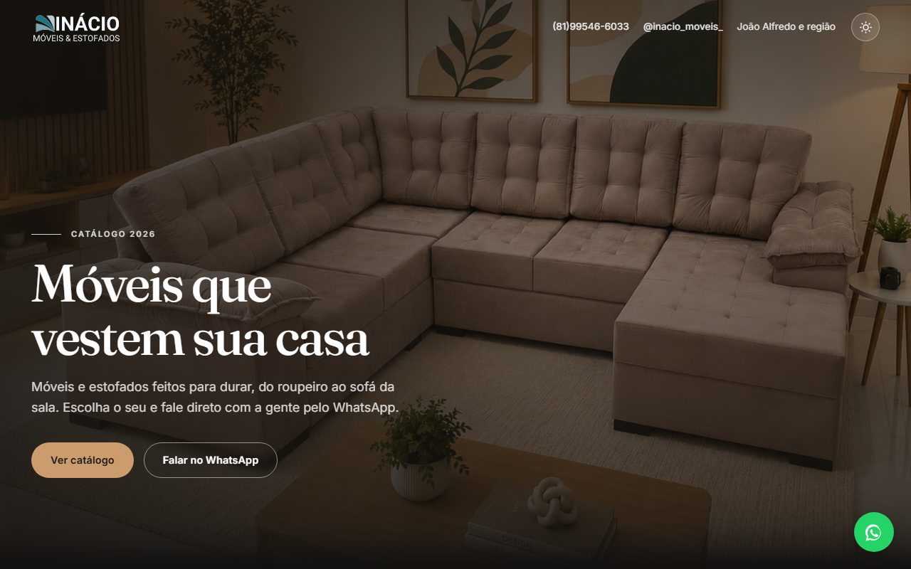
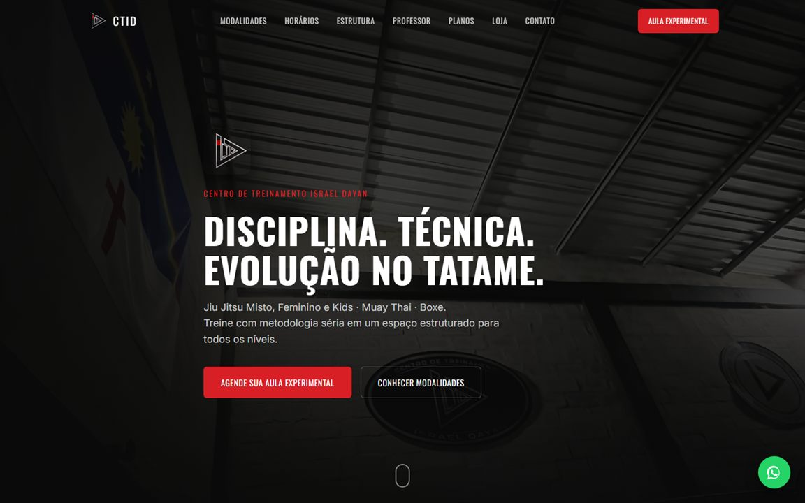
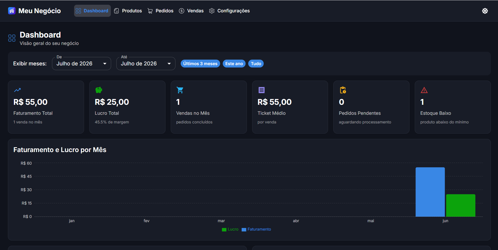
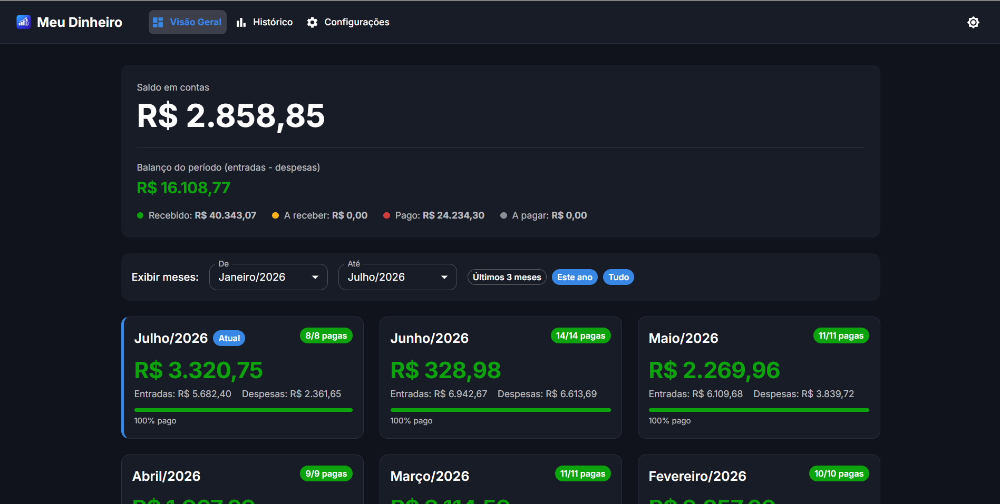
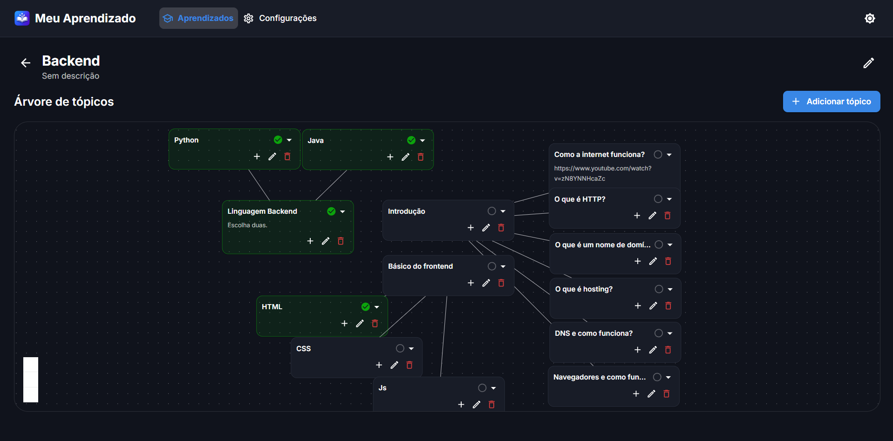
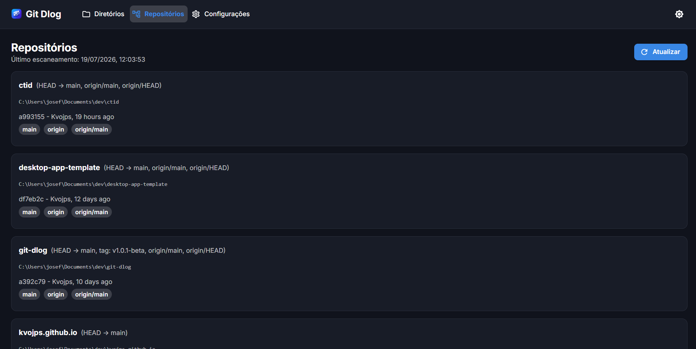

Sites e landing pages
Para quem ainda depende só de rede social. Rápido, bom no celular e visível no Google.
- Site institucional ou página de captação
- Domínio próprio e publicação inclusos
- Textos e estrutura pensados para converter
Sou José Ferreira, Engenheiro de Software. Levo seu projeto da primeira conversa até o sistema no ar — sem intermediário e sem jargão.

4 anos entregando software para clientes como
Serviços
Todo projeto começa pelo problema, não pela tecnologia.
Para quem ainda depende só de rede social. Rápido, bom no celular e visível no Google.
Para quem controla vendas, estoque ou financeiro em caderno e planilha — e já não dá conta.
Aquela tarefa repetitiva que consome horas da equipe toda semana, virando processo automático.
Para empresas de tecnologia: reforço em projetos web e backend, com arquitetura e testes.
Trabalhos
Do primeiro rascunho até a publicação.

Produtos próprios
Quatro apps para Windows que criei e distribuo de graça — da ideia à instalação na máquina do usuário. Fique à vontade para testar.

Gestão de produtos, pedidos e vendas.

Controle financeiro pessoal.

Organize aprendizados em árvores de tópicos.

Status de HEAD e branches de vários repositórios git.
Sobre
Há 4 anos trabalho na Fitec em projetos de e-commerce, testes de hardware e processamento de dados, para clientes como Acer, Foxconn (que monta os iPhones da Apple) e Indorama.
Trago essa bagagem para projetos pequenos: código organizado, prazo realista e um sistema que continua funcionando depois da entrega. Formado e mestrando em Engenharia pela UPE.
Contato
Me conte em poucas linhas o que precisa. Respondo em até 1 dia útil, sem compromisso.
App desktop que varre recursivamente os diretórios que você cadastrar, localiza múltiplos repositórios git e mostra, para cada um, o commit HEAD e as branches agrupadas por commit, mais recente primeiro — útil para acompanhar vários projetos de uma vez sem entrar em cada pasta.
App desktop para organizar aprendizados em árvores de tópicos, com status, anotações e um grafo arrastável estilo mapa mental. Uso individual e local, sem autenticação e sem servidor.
Aplicativo desktop para controle de finanças pessoais. Organize contas a pagar e a receber, gerencie lançamentos recorrentes, anexe comprovantes, acompanhe gráficos e tenha uma visão clara do seu patrimônio e gastos. Todos os dados ficam armazenados apenas no seu computador.
App desktop para acompanhar o catálogo de produtos, controlar estoque e gerenciar pedidos do início ao fim, com uma visão geral de receita e lucro. Tudo salvo localmente, sem depender de internet.